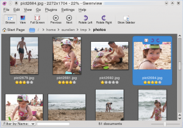
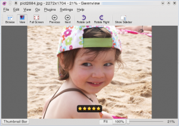
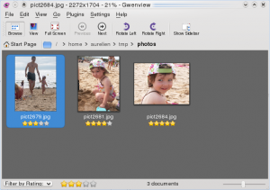

Gwenview has always been file-system oriented, but with the advance of Nepomuk, associating semantic information to your files is becoming more ubiquitous.
I started adding support for Nepomuk in Gwenview since KDE 4.1. It still needs a lot of work, but it is becoming quite usable now. In this article I am going to present how you can easily rate your images in Gwenview.
In the sidebar you can now see all Nepomuk information in the "Semantic Information" group. This includes:
In browse mode, there is clickable rating stars below each thumbnail, making it convenient to quickly rate images.
View mode is still about showing your image with a minimum distraction, so there is no always-present rating widget. You can rate images through the menu, using Edit > Rating, but it's much more convenient to use the shortcut keys: Press keys 0 to 5 to associate a rating value. When you press these keys a rating indicator is shown over the images for a few seconds:
This makes it fast and easy to rate images while browsing for keyboard friendly users: go fullscreen, press a key between 0 and 5 to rate image, press Space to go to the next one, repeat.
Rating images is interesting, but it is of marginal use unless you can filter images to show only the highest rated ones. I am currently reworking the user interface for this feature, but it is already possible to filter your folder: in browse mode, click on the combobox in the bottom left of the window and select "Filter by rating". Now click on the rating widget to only show images with a rating greater or equal to the rating you want.
Hopefully this will be available in KDE 4.2. Right now to give it a try you
need to build kdegraphics with the
-DGWENVIEW_SEMANTICINFO_BACKEND=Nepomuk
cmake option.
{kind=link}
{kind=link}
{kind=link}
{kind=link}